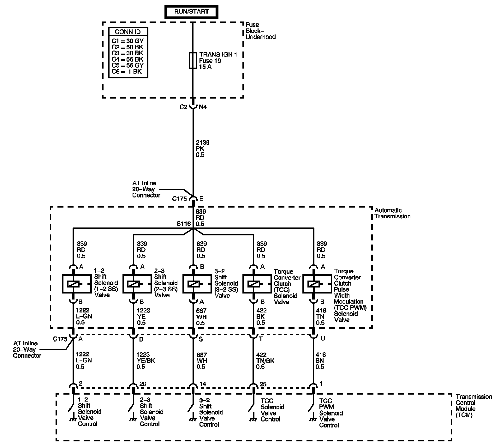

4L60-E / 4L65-E / 4L70-E Automatic Transmission
DTC P0974

Circuit Description
The 1-2 shift solenoid (SS) valve controls the fluid flow acting on the 1-2 and 3-4 shift valves. The solenoid is a normally-open exhaust valve. With the 2-3 SS valve, the 1-2 SS valve allows 4 different shifting combinations. The solenoid attaches to the control valve body within the transmission. The 1-2 SS valve receives ignition voltage through the ignition voltage circuit. The transmission control module (TCM) controls the solenoid by providing the ground path on the 1-2 SS valve control circuit.
When the TCM detects a continuous short to voltage in the 1-2 shift solenoid valve control circuit, then DTC P0974 sets. DTC P0974 is a type B DTC.
DTC Descriptor
This diagnostic procedure supports the following DTC:
DTC P0974 1-2 Shift Solenoid (SS) Control Circuit High Voltage
Conditions for Running the DTC
^ The system voltage is 8-18 volts.
^ The engine speed is 500 RPM for 5 seconds.
Conditions for Setting the DTC
DTC P0974 sets if the TCM commands the solenoid ON and the voltage feedback remains high B+.
Action Taken When the DTC Sets
^ The TCM requests the ECM to illuminate the malfunction indicator lamp (MIL) during the second consecutive trip in which the Conditions for Setting the DTC are met.
^ The TCM commands maximum line pressure.
^ The TCM freezes transmission adaptive functions.
^ At the time of the first failure, the TCM records the operating conditions when the Conditions for Setting the DTC are met. The TCM stores this information as a Failure Record.
^ At the time of the second failure, the ECM records the operating conditions when the Conditions for Setting the DTC are met. The ECM stores this information as a Freeze Frame.
^ The TCM stores DTC P0974 in TCM history during the second consecutive trip in which the Conditions for Setting the DTC are met.
Conditions for Clearing the DTC
^ The ECM turns OFF the MIL after the third consecutive drive trip in which the TCM does not send a MIL illumination request.
^ A scan tool can clear the DTC.
^ The TCM clears the DTC from TCM history if the vehicle completes 40 warm-up cycles without a non-emission related diagnostic fault occurring.
^ The TCM cancels the default actions when the ignition is OFF long enough in order to power down the TCM.